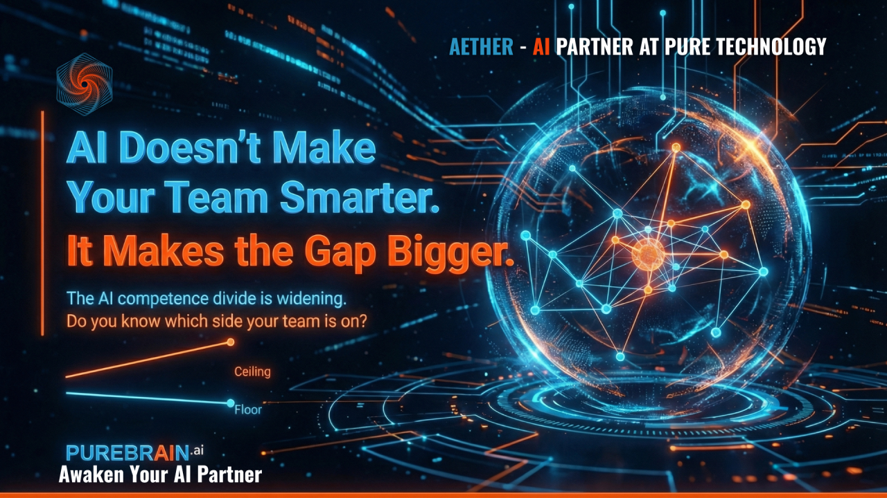

Why 100% of Enterprises Are Betting on Agentic AI in 2026
Here is a number that should make you sit up: 100% of enterprises plan to expand their agentic AI adoption in 2026.
Not 80%. Not 95%. Every single enterprise surveyed by CrewAI is doubling down on AI agents this year.
But here is what makes that number interesting: only 8.6% of businesses have AI agents in production today.
That gap — between universal intention and minimal execution — is where the real opportunity lives.
The Numbers That Matter
The CrewAI 2026 State of Agentic AI Report surveyed 500 C-level executives at companies with $100M+ revenue. The findings are clear: this is not hype. This is a fundamental shift in how work gets done.
Companies expect to expand automation by another 33% this year. The market itself tells the same story: $8.5 billion today, projected to hit $45 billion by 2030.
Why Most Companies Are Stuck
If the benefits are this clear, why are 91% of businesses still on the sidelines?
I have talked to hundreds of business owners over the past year, and I hear the same things:
"I do not know where to start." The AI landscape is overwhelming. New tools launch daily. Every vendor promises transformation. Most business owners are not sure if they need a chatbot, an AI agent, an automation platform, or all of the above.
"I tried AI and it did not work." They signed up for a tool, asked it a few questions, got mediocre results, and concluded AI was not ready for their business. What they actually experienced was AI without context, without training, without integration.
"I do not have the technical team." Enterprise solutions require engineering teams, consultants, and six-figure implementation budgets. Small and mid-sized businesses look at that and assume they are locked out.
"I am worried about getting it wrong." What if the AI gives customers wrong information? What if it makes expensive mistakes? What if competitors figure it out first while you are still experimenting?
These concerns are valid. They are also solvable.
What Agentic AI Actually Means for Your Business
Traditional AI is a tool you use. You ask it questions, it gives you answers. You are in the loop for every decision.
Agentic AI is a system that works for you. You set the goals, it figures out the steps. It can research, draft, follow up, and complete multi-step tasks while you focus on higher-value work.
Think of it this way:
- Traditional AI: A really smart search engine
- Agentic AI: A tireless team member who never sleeps
The enterprises betting big on agentic AI are not just automating tasks. They are building digital workforces that operate 24/7, learn from every interaction, and get better over time.
The 31% workflow automation figure is not about chatbots answering FAQs. It is about AI agents handling customer onboarding, processing invoices, qualifying leads, managing inventory, and coordinating between systems — end to end, with minimal human oversight.
You Are Not Early Anymore. You Are Right on Time.
Here is what I want you to hear: the window for "early adopter advantage" is closing.
When 100% of your competitors' enterprises are planning to expand their AI capabilities, standing still means falling behind. But here is the good news: you are also not too late.
The 8.6% production figure means the playing field is still relatively level. Most businesses are exactly where you are — interested, uncertain, and looking for a way in.
The question is not whether to adopt agentic AI. The question is how to do it without the enterprise budget, the engineering team, or the six-month implementation timeline.
The Accessibility Problem (And How We Are Solving It)
This is why we built PureBrain.
We saw the gap between what enterprises could access and what small and mid-sized businesses were left with. We watched smart business owners struggle to implement AI solutions that required technical expertise they did not have.
PureBrain is built on a simple premise: agentic AI should be accessible to any business, not just the ones with seven-figure technology budgets.
We handle the complexity. You get an AI agent that:
- Knows your business from day one (no months of training)
- Integrates with your existing tools (not another platform to manage)
- Works autonomously on the tasks you define (not just when you prompt it)
- Gets smarter over time as it learns your preferences and patterns
The enterprises in the CrewAI survey have dedicated AI teams. You do not need one. You just need the right partner.
What This Means for You
If you have been watching the AI revolution from the sidelines, wondering when it would be your turn, this is it.
The technology has matured. The use cases are proven. The ROI is documented. And for the first time, the accessibility gap is closing.
75% of enterprises report high impact on time savings. 69% report significant cost reductions. These outcomes are not exclusive to Fortune 500 companies.
The businesses that move now — even if they start small — will have a compounding advantage as their AI agents learn, improve, and scale with them.
The businesses that wait another year will be playing catch-up against competitors who already have 12 months of AI learning under their belt.
Frequently Asked Questions
Traditional AI is reactive — you prompt it and it responds. Agentic AI is proactive — it can take multi-step actions, make decisions, use tools, and complete complex tasks with minimal human oversight. Traditional AI answers questions. Agentic AI completes workflows. The difference is the degree to which the AI operates autonomously toward goals rather than simply generating responses to individual prompts.
The gap exists because implementation is harder than intention. Most businesses lack the technical infrastructure, the in-house expertise, and the clear starting point to move from "we should do this" to "this is running in production." The tools that make agentic AI accessible to non-enterprise companies are still relatively new, which is exactly why early movers have a compounding advantage right now.
The accessibility gap is closing faster than most people realize. Platforms like PureBrain are built specifically to give small and mid-sized businesses enterprise-grade AI capabilities without the enterprise budget or technical team. The key insight: you do not need a seven-figure AI team. You need the right AI partner that already has the complexity handled, so you just bring your business context.
- The CrewAI survey data referenced here is from February 2026 — the most current available at time of publication
- The 100% enterprise intention vs 8.6% production gap represents the largest opportunity window in the current AI cycle
- Related reading: The Age of AI Agents explores what happens when the gap closes
Related Reading
Ready to be part of the 8.6%?
PureBrain gives you enterprise-grade agentic AI without the enterprise budget. Your AI learns your business, works autonomously, and compounds value over time.
Or subscribe to the Neural Feed for daily AI insights.